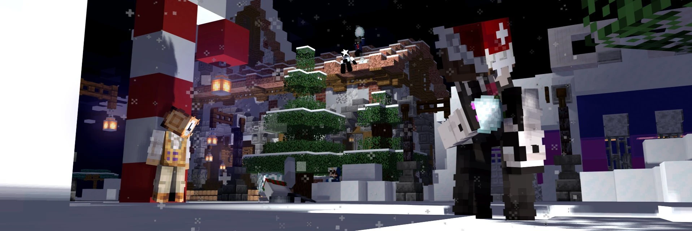
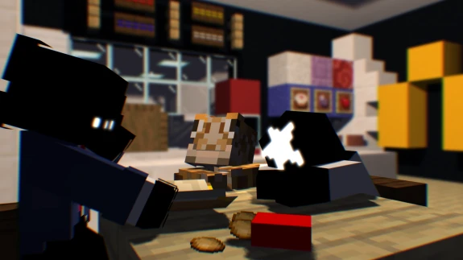

Свобода без приватов
Общий мир и договорённости между игроками. Без защищённых плагином участков — с ответственностью за свои действия.

Не просто выжить.
Стать частью истории.
Мир на стыке полуанархии и ролевой игры.
Где у поступков есть последствия, а у каждого — своя роль.
01 / У ЭТОГО МИРА ЕСТЬ ХАРАКТЕР
Твой дом, твои союзники,
твоя репутация.
«Грань» — авторский проект, в котором история раскрывается через выживание и общие события. Здесь можно строить, исследовать, вступать в конфликты и находить людей, с которыми хочется остаться ещё на один вечер.
Общий мир и договорённости между игроками. Без защищённых плагином участков — с ответственностью за свои действия.
Лор, глобальные ивенты и события сообщества. Ты участвуешь в жизни мира, а не наблюдаешь за ней со стороны.
Сложный режим, без сохранения инвентаря и тотемов бессмертия. Подготовка, осторожность и хорошие союзники имеют значение.

02 / НЕ ВСЁ ИЗМЕРЯЕТСЯ АЛМАЗАМИ
Здесь есть «Бездны» — игровая валюта, за которую можно получить собственный лорный предмет.
Своя модель, эффекты, название и свойства. Не готовый набор из магазина, а часть истории твоего персонажа. Детали и баланс согласовываются с администрацией.
03 / КАДРЫ ИЗНУТРИ
Настоящие скриншоты сообщества.
За каждым — свой игровой вечер.
Прогруженная карта мира и ада с радаром игроков.
04 / СВОБОДА НАЧИНАЕТСЯ С УВАЖЕНИЯ
Полуанархия не означает, что можно всё. Перед первым входом прочитай полные правила — короткая версия справа их не заменяет.
Читать полные правилаГриф запрещён. Исключения ради лора рассматривает администрация. За разрушениями могут последовать восстановительные задания.
Нельзя без серьёзной причины убивать игроков без ресурсов, атаковать AFK-игроков на фермах или уничтожать жителей и мобов, нужных для их работы.
Запрещены читы и запрещённые модификации, погрузчики чанков и дюп вне перечисленных в правилах исключений. Список разрешённых модов уточняй через бот.
Не распространяй личные данные, не спамь и не провоцируй травлю. Если планируешь долго отсутствовать, заранее сообщи администрации: активность на сервере учитывается.
05 / ТВОЯ СЛЕДУЮЩАЯ ГЛАВА
Три шага — и у этого мира
появится ещё одна история.
Прочитай правила. Если ты ещё не в Discord, спроси о входе в официальном боте проекта.
Спросить о входе Уже в Discord? Открыть информацию ↗Обязательные моды нужны для подключения. Дополнительная сборка делает игру комфортнее.
Обязательная сборка Дополнительные моды ↗В Minecraft открой «Сетевая игра» → «Добавить сервер» и вставь адрес.
Нажми на адрес, чтобы скопироватьПЕРЕД ПЕРВЫМ ВХОДОМ
Основа — выживание в Minecraft, но сервер работает на Fabric и требует обязательную сборку. Есть лорные предметы, собственные крафты, особые мобы и глобальные события.
Нет, для входа нужна обязательная сборка из информационного канала. Версия игры — 26.1.2, загрузчик — Fabric. Ресурспак обычно устанавливается автоматически при подключении.
Обычный мир и энд — 10 000 × 10 000 блоков, то есть граница на координатах ±5000. Ад — 5000 × 5000 блоков.
Нет. Автор проекта не вводит платную проходку. Если хочется поддержать развитие сервера, для этого есть официальный Boosty.
В новостях и ивент-канале Discord. Лор, обсуждения и скриншоты тоже живут там. Ссылки на официальные площадки — ниже.